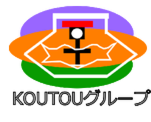

KIU8249andKOUTOU / CONTACT
つながる。
最新の活動や作品は、各SNS・チャンネルをご覧ください。
OFFICIAL ACCOUNTS
公式アカウント
PLEASE NOTE
お問い合わせについて
お仕事の依頼は基本的に受け付けておりません。コメント欄では、スパム・誹謗中傷・いやがらせ・切り抜きや転載に関する投稿はご遠慮ください。
チャンネル視聴上のルールを見る
KIU8249andKOUTOUKIU8249andKOUTOU / CONTACT
最新の活動や作品は、各SNS・チャンネルをご覧ください。
OFFICIAL ACCOUNTS
PLEASE NOTE
お仕事の依頼は基本的に受け付けておりません。コメント欄では、スパム・誹謗中傷・いやがらせ・切り抜きや転載に関する投稿はご遠慮ください。
チャンネル視聴上のルールを見る